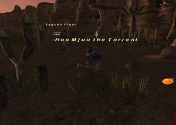
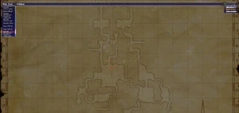

Level 75 reference · Zenith rules
|
Job: White Mage Notorious Monster |
 |

|
Zone |
Level |
Drops |
Steal |
Spawns |
Notes |
|
16-17 |
1 |
A, L, S | |||
|
HP = Detects Low HP; M = Detects Magic; Sc = Follows by Scent; T(S) = True-sight; T(H) = True-hearing JA = Detects job abilities; WS = Detects weaponskills; Z(D) = Asleep in Daytime; Z(N) = Asleep at Nighttime | |||||


Notes:
- Lottery spawn of Yagudo Mendicant around H-10 on Map 1. You need to drop down the hole in H-7 on Map 1 to reach the area where he spawns. He can spawn anywhere in H-10.
- There are four possible Yagudo Mendicant spawns in the area. Two are shared spawns with the Pipers and Persecutors; they can spawn as any of the three. These are not placeholders. There are two others that always spawn as Yagudo Mendicants - except when one of them spawns as Hoo Mjuu the Torrent. Of these two, the one that shows up lower on Wide Scan is the placeholder. All Yagudo here have a respawn time of eight minutes.
- The Placeholder is the first Yagudo Mendicant you will see right as you leave the cave to enter this area.
- Soloable around level 25.
- Uses Benediction when he gets to about 50% HP.
- Drop rate for the Monster Signa is very rare, around 5%.
- Spawns once approximately every 1-3 Vana'diel days.
Adapted from Eden Wiki: Hoo Mjuu the Torrent · Contributors and history · CC BY-SA 4.0. Revision 44104. Layout, links and optional background text adapted for Zenith.